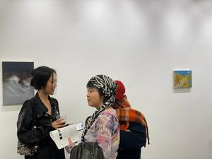
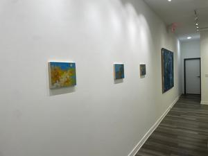
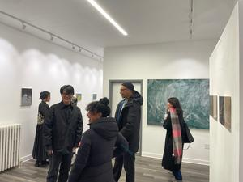
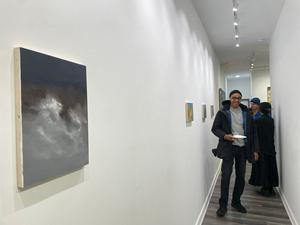
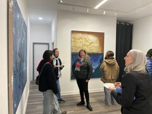
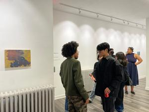
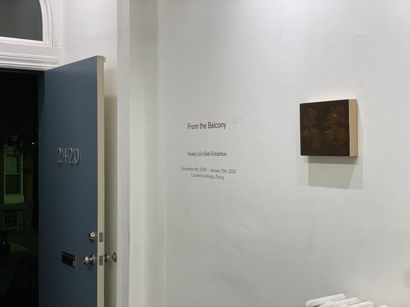
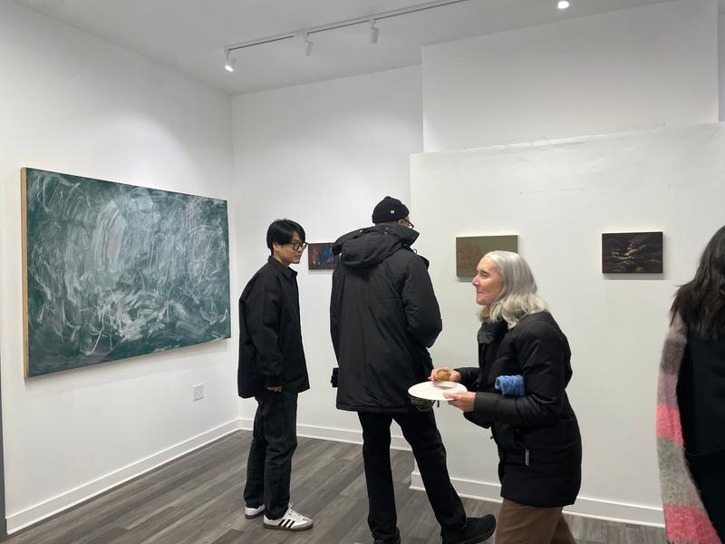

我们与艺术家 Huaqi Liu 及 Waller Gallery 合作，呈现《来自阳台》（From the Balcony）——一场包含新作与一批未发表作品的个展。这是对 Liu 独特实践的反思：捕捉塑造人类存在的无形力量。作品追溯他叙事的起源，揭示 Liu 的艺术如何超越视觉再现、深入存在的本质，同时检视环境、社会与文化变迁对个人命运的影响。这些作品共同构成他旅居岁月的一段阶段性诗篇。








在另一个诗意的转折中，中文里"命运"的"命"字恰好含有"云"这个字符。这一意外的联想提供了一个醒目的类比：云成为命运的象征，将抽象的哲学概念嵌入可触、可感的意象之中。Liu 在不同的动态、媒介与尺度中捕捉云的形态、质感与空间形式，映照它们的短暂本质与我们内在的不可预测性。
展览信息
展期2024 年 12 月 6 日 — 2025 年 1 月 10 日
开幕2024 年 12 月 6 日（周五）6–8 pm
地点Waller Gallery, 2420 North Calvert Street, Baltimore
艺术家Huaqi Liu
策展人Minglu Zhong